자연생태복원기사(구) (2016-08-21 기출문제)
1과목: 환경생태학개론
1. 녹색식물 광합성 작용의 생화학적 공식은?
- H2O + CO2 + 일광에너지 → (CH3O)ₙ + O2
- H2O + CO2 + 일광에너지 → (CH3O)ₙ + O3
- H2O + CO2 + 일광에너지 → (CH2O)ₙ + O2
- H2O + CO2 + 일광에너지 → (CH2O)ₙ + O3
(정답률: 72%)

2. 다음 설명에 해당되는 조류조사 방법은?
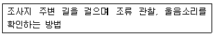
- 직접확인방법
- 선조사법
- 정점기록법
- 라이브트랩
(정답률: 56%)
3. 조사대상지역 토양의 용적밀도는 1.2g/cm3이고, 입자밀도는 2.65g/cm3일 때 공극률은?
- 40%
- 45%
- 50%
- 55%
(정답률: 37%)
4. 다음 [보기] 설명의 ( )에 적당한 용어들은?
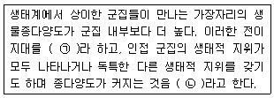
- ㉠ 추이대, ㉡ 종다양성 효과
- ㉠ 추이대, ㉡ 가장자리 효과
- ㉠ 모서리, ㉡ 가장자리 효과
- ㉠ 모서리, ㉡ 주연효과
(정답률: 71%)
5. 대기 중에서 1차 오염물질이 광화학 반응에 의해서 생성시키는 2차 오염물질이라고 볼 수 없는 것은?
- 케톤(ketone)
- 알데히드(aldehyde)
- 아세트산(acetic acid)
- 질산과산화아세틸(PAN)
(정답률: 67%)
6. 어느 호수에서 식물플랑크톤의 총 생산량은 1.7gc/m3/일이다. 오차 생산자에서 1차 소비자로 전달되는 에너지 효율이 10% 라면 I차 소비자로 전달된 생물량 (gc/m3/일)은?(오류 신고가 접수된 문제입니다. 반드시 정답과 해설을 확인하시기 바랍니다.)
- 1.7
- 0.75
- 0.17
- 0.075
(정답률: 25%)
7. 질소고정 박테리아는 질소의 순환과정에 깊이 관여하고 있다. 다음 중 질소고정 박테리아로 널리 알려져 있는 것은?
- Rhizobium
- Nitrobacter
- Nitrosomonas
- Micrococcus
(정답률: 67%)
8. 서식처에 대한 설명으로 옳지 않은 것은?
- 서식처의 중요 구성요소는 먹이, 은신처, 물, 공간 등이다.
- James H. Shaw는 은신처가 서식처의 가장 분명한 구성요소로 보았다.
- 서식처 조사의 일반적인 과정은 대상지역 선정, 서식처 유형 분류, 서식처 유형별 조사, 서식처 유형의 도면화 등의 순으로 이루어진다.
- 서식처 예비판정이라 함은 현지에 나가기 전에 실내에서 지형도 등을 이용하여 서식처의 유형을 판정 하는 것이다.
(정답률: 54%)
9. DDT의 환경생태학적 영향이 아닌 것은?
- 생물학적 농축 능력을 가진다.
- 지방이나 지질에 높은 용해도룔 가진다.
- 현재 대부분의 선진국은 사용하지 않는다.
- 먹이사슬의 하위단계 생물에서 고농축 된다.
(정답률: 71%)
10. 다음 중 화분 매개충이 아닌 것은?
- 나비
- 매미
- 꿀벌
- 꽃등에
(정답률: 78%)
11. 개체군(population)의 출생률과 사망률 모두에 특히 영향을 주는 중요한 개체군의 특징은?
- 연령 분포(age distribution)
- 수용 능력(carrying capacity)
- 생식 잠재력(reproductive potential)
- 환경 저항(environmental resistance)
(정답률: 53%)
12. 식물정화법(phytoremediation)의 처리원리 중 '식들에 의한 추출'에 의하여 중금속류를 처리할 수 있는 가장 대표적인 식물 종은?
- 해바라기
- 버드나무
- 포플러나무
- 수생 서양 가새풀
(정답률: 59%)
13. 서로 떨어져 있을 때에는 생장이 일어나지 못하나 특정한 두 종이 반드시 서로를 필요로 하는 관계는?
- 상리공생
- 상조공생
- 편리공생
- 내부공생
(정답률: 79%)
14. 환경호르몬의 특징으로 틀린 것은?
- 쉽게 분해된다.
- 잔류기간이 길다.
- 안정된 물질이다.
- 농축되는 특성을 갖는다.
(정답률: 77%)
15. 해양경관을 이루고 있는 대부분의 지역이 해안인데, 다음 설명에서 해안에서 일어나는 현상으로 옳지 않은 것은?
- 해안은 육지, 대기, 바다가 만나면서 서로에게 영향을 주고 받는 연안에 이루어진 좁고 긴 지대를 말한다.
- 해안은 육지와 해양환경의 전이대(transitional zone)로 습지, 갯벌, 사구 등 다양한 환경들이 있으 며, 이들은 서로 평형을 유지하며 완충지 역할을 한다.
- 해안지역은 지구에서 가장 평평한 부분 중 하나로 대륙사면이 끝나는 바깥쪽에 발달하며, 수온, 염분, 흐름의 변화가 적은 지역이다.
- 해안지역은 간척사업을 통하여 농업, 공업, 신도시, 위락시설 등의 건설로 급속히 변화되어, 생물 서식지 파괴가 일어나기도 하는 지역이다.
(정답률: 72%)
16. 연안(coast)에 대한 설명으로 틀린 것은?
- 연안생태계는 육상식생을 포함한다.
- 육지와 해양 사이의 생태적 전이대이다.
- 연안은 해안의 농경지 생태계와 무관하다.
- 해양기후 변화에 의하여 직접적으로 영향을 받는다.
(정답률: 83%)
17. 군집을 어떤 일정한 방향으로 영구적으로 변화시키지 못하는 비방향성 변화에 속하지 않는 것은?
- 변동
- 진화
- 계절변화
- 교체변화
(정답률: 59%)
18. 삼림의 제거로 인하여 나타나는 환경 변화가 아닌 것은?
- 토양침식의 중가
- 서식지의 전환에 따른 종 다양성의 감소
- 탄소동화작용의 감소로 인한 지구온난화
- 영양염류 축적으로 인한 토양의 비옥도 중가
(정답률: 83%)
19. 해안 염습지에 대한 설명으로 옳지 않은 것은?
- 염생식물이 살고 있다.
- 망그로브(mangrove)같은 염생식물은 비염분 토양에서 더 잘 자란다.
- 퉁퉁마디 같은 일부 염생식물은 사막식물과 같이 다육질이다.
- 토양의 염분농도가 높으면 식물은 충분한 물을 얻기가 어려워진다.
(정답률: 75%)
20. 생물다양성에 관한 협약서상 생물자원에 대한 설명으로 적절하지 않은 것은?
- 생태계의 구성요소이다.
- 지구상의 모든 생물을 포함한다.
- 코끼리떼, 옥수수밭, 물고기떼, 종자, 유전자는 생물자원에 포함된다.
- 실질적 혹은 잠재적으로 사용되거나 가치가 있는 유전자원 및 생물체이다.
(정답률: 64%)
2과목: 환경계획학
21. S.R. Arnstein(1969)은 시민의 영향력을 기준으로 참여수준을 3분류 8단계로 구분하였다. 다음 중 가장 효율적인 단계의 시민참여는?
- 치료
- 회유, 상담
- 시민통제/자치
- 정보제공, 교육
(정답률: 69%)
22. 환경영향평가 등의 기본원칙에 대한 설명으로 틀린 것은?
- 계획 또는 사업이 특정지역에 편중되는 누적영향을 고려하지 않는다.
- 보전과 개발이 조화와 균형을 이루는 지속가능한 발전이 되도록 하여야 한다.
- 결과는 지역주민 및 의사결정권자가 이해할 수 있도록 간결하고 평이하게 작성되어야 한다.
- 대상이 되는 계획 또는 사업에 대하여 충분한 정보 제공 등을 함으로써 환경영향평가 등의 과정에 주민 등이 원활하게 참여할 수 있도록 노력하여야 한다.
(정답률: 73%)
23. 생태계보전협력금의 부과 상한액은? (단, 대통령령이 정하는 국방목적의 사업은 제외한다.)
- 50억
- 70억
- 100억
- 150억
(정답률: 54%)
24. 토지피복지도에 관한 설명으로 틀린 것은?
- 주제도의 일종으로 지구표면 지형지물의 형태를 일정한 과학적 기준에 따라 분류하여 동질의 특성을 지닌 구역을 color indexing한 후 지도의 형태로 표현한 공간정보 DB를 말함
- 해상도에 따라 대분류(해상도 100m급), 중분류(해상도 50m급), 세분류(해상도 20m급), 세세분류(해상도 5m급)의 4가지 위계를 가짐
- 지표면의 투수율(透水率)에 의한 비점오염원 부하량 산정. 비오톱 지도 작성에 의한 도시계획 등에 폭 넓게 활용
- 우리나라 실정에 맞는 분류기준을 확정하여 1998년 환경부에서 최초로 남한지역에 대한 대분류 토지 피복도 구축
(정답률: 46%)
25. 환경부장관이 습지보호지역 중 습지의 훼손이 심화되었거나 심화될 우려가 있는 지역 또는 습지생태계의 보전상태가 불량한 지역 중 인위적인 관리 등을 통하여 개선할 가치가 있는 곳에 지정할 수 있는 지역은?
- 습지개선지역
- 습지복원지역
- 습지관리지역
- 습지복구지역
(정답률: 44%)
26. 다음의 내용이 설명하는 것은?
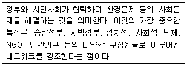
- 환경레짐
- 환경 가버넌스
- 억제모델
- 몬트리올 의정서
(정답률: 76%)
27. 국토환경보전계획의 목표와 가장 거리가 먼것은?
- 환경 친화적 개발 유도ㆍ지원
- 자연생태계보전지역의 지정
- 국토환경보전정책의 추진기반 강화
- 개발과 조화된 국토환경보전체계를 구축
(정답률: 44%)
28. 생태도시건설을 위한 계획요소가 아닌 것은?
- 보행자 공간 네트워크화
- LPG, LNG 사용의 최소화 방안
- 오픈스페이스 확보를 위한 건물배치
- 주민참여에 의한 지역사회 활동 및 도시관리 유지방안
(정답률: 69%)
29. 다음 설명에 해당하는 용도지역은?
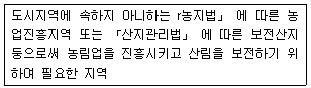
- 산림지역
- 농림지역
- 녹지지역
- 자연환경보전지역
(정답률: 61%)
30. 특별시ㆍ광역시ㆍ특별자치시ㆍ특별자치도ㆍ시 또는 군의 관할 구역에 대하여 기본적인 공간구조와 장기발전방향을 제시하고, 그 내용이 사회 경제적 측면까지 포함하는 장기종합계획이며, 5년마다 관할 구역의 타당성 여부를 전반적으로 재검토하여 이를 정비하는 계획은?
- 도시ㆍ군 기본계획
- 광역도시계획
- 도시ㆍ군 관리계획
- 지구단위 계획
(정답률: 58%)
31. 야생동물의 이동 중 공간규모에 따른 이동통로의 유형이 아닌 것은?
- 가장자리 규모
- 울타리 규모
- 경관모자이크 규모
- 광역적 규모
(정답률: 29%)
32. 야생동물이 멸종위기에 처하게 되는 이유에 해당하지 않는 것은?
- 서식지의 파괴
- 향토수종 확대
- 환경오염
- 과도한 이용
(정답률: 76%)
33. 우리나라 환경영향평가 제도는 1971년 공해방지법의 공해사전대책 조항으로 시작하여, 1981년 환경보전법의 개정과 '환경영향평가서 작성등에 관한 규정'이 제정되면서 본격적으로 시행되었다. 1986년 환경보전법의 개정으로 이루어진 환경영향평가 제도상의 가장 큰 변화는?
- 정부사업뿐 아니라 공공단체, 정부 투자기관의 사업을 추가로 포함시켰다.
- 주민참여 제도가 도입되어 초안평가서와 최종평가서가 분리되었다.
- '관광단지'개발과 같은 민간부분의 개발사업이 추가되었다.
- 지역단위 개발사업에 대한 평가협의 업무를 지방환경청으로 위임하였다.
(정답률: 39%)
34. '전원도시(Garden city)'의 개념으로 가장 거리가 먼 것은?
- 공공공급시설은 그 도시에서 자체로 해결하도록 하였다.
- 도시 내의 토지를 도시개발에 이용하기 위하여 영구히 공유로 하였다.
- 공업시설은 배제함으로서 환경오염을 사전 차단하고, 전원의 느낌을 갖도록 하였다
- 1902년 에베니저 하워드(Ebenezer Howard)가 도시와 전원의 공간적 기능을 적절히 조화시키는 이상도시로 제시한 것이다.
(정답률: 38%)
35. 환경계획의 영역적 분류 중 내셔널 트러스트 운동과 가장 깊은 관련을 가진 분야는?
- 오염관리계획
- 환경자원관리계획
- 환경시설계획
- 생태건축계획
(정답률: 58%)
36. 유엔환경계획의 환경범주 중에서 인간환경 범주에 포함하지 않는 것은?
- 생물생산체계
- 평화안전 및 환경
- 환경교육과 공공인식
- 생물적 환경 (생산자, 소비자, 분해자)
(정답률: 65%)
37. 생물지리지역의 구분 방법 및 특징이 잘못 설명된 것은?
- 생물지역(bioregion) - 생물지리학적 접근단위의 최대단위
- 하부생물지역(subregion) - 생물지역의 바로 아래 단계이며, 경관지구의 상위 단계
- 경관지구(landscape district) - 유역과 산맥에 의해 구분되며 관찰자가 인식할 수 있는 범위
- 장소단위(place unit) - 지형, 동•식물 서식현황, 유역, 토지이용패턴을 중심으로 일차적으로 구분하며, 현지답사를 통하여 문화 및 생활양식을 추가로 고려하여 구분
(정답률: 45%)
38. 도심의 광장녹지로부터 농촌, 자연지역에 이르는 생태네트워크의 시행방안에 있어서 고려사항이 아닌 것은?
- 기존 자생수목을 최대한 보전 활용
- 기존 녹지를 적극적으로 보전하고 최대한 계획에 활용
- 단지 중심부에 핵 소생물권 역할을 하는 중앙 녹지대를 조성
- 단지 내 생물이 이동할 수 있는 거점녹지와 점녹지를 분산 조성
(정답률: 59%)
39. 자연환경보전법에서 규정한 '생태축'의 설명으로 ( )에 들어갈 단어가 순서대로 옳은 것은?
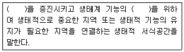
- 생태연결성, 다양성
- 생태연결성, 자립성
- 생물다양성, 안정성
- 생물다양성, 연속성
(정답률: 48%)
40. 유네스코(UNESCO)는 생물다양성을 보전하고 지역사회의 발전을 도모하기 위해 생물권 보전지역을 지정하고 있다. 생물권 보전지역으로 지정되지 않은 곳은?
- 설악산
- 광릉숲
- 신안 다도해
- 지리산
(정답률: 44%)
3과목: 생태복원공학
41. 복원의 원리에 대한 설명으로 옳지 않은 것은?
- 복원은 부정적인 힘의 영향을 역전시켜야 한다.
- 노천광산지역은 오염원에 대한 물리적, 화학적 특성을 개선하고, 식생피복을 회복시킨다.
- 보호받는 지역을 중대시킬 필요가 있으며 보호받는 지역만으로도 장기적인 관점에서 생물의 다양성을 유지해 나갈 수 있다.
- 서식처의 상실과 분절화가 광범위하게 일어나는 지역에 자연 또는 반지연 지역을 증대시킬 필요성이 있다.
(정답률: 55%)
42. 이입종이 자생 생태계 내에 침입•정착하는 생물학적 침입에 대한 저감 대책이 아닌 것은?
- 이입의 기회를 줄인다.
- 이입종이 정착하기 쉬운 환경을 만들지 않도록 한다.
- 이미 생물학적 침입이 일어난 곳은 이입종을 물리적으로 제거한다.
- 생태적 지위에서 빈틈을 많이 만들어 준다.
(정답률: 72%)
43. 생태복원 식물의 식재설계 과정에 대한 설명으로 적합한 것은?
- 식재기능 충족성 → 식재기법 개념도 → 식물종 선정 → 식재설계
- 식재기능 충족성 → 식물종 선정 → 식재기법 개념도 → 식재설계
- 식물종 선정 → 식재기능 충족성 → 식재기법 개념도 → 식재설계
- 식물종 선정 → 식재기법 개념도 → 식재기능 충족성 → 식재설계
(정답률: 44%)
44. 발아력이 뛰어나고 초기성장이 왕성하며 균질한 종자를 대량 입수할 수 있어 절개사면의 녹화용으로 사용할 수 있는 식물만으로 구성된 것은?
- 톨훼스큐, 위핑러브그래스, 원추리
- 쑥, 억새, 비수리
- 호장근, 사초과 식물, 갈대
- 억새, 곰취, 쇠별꽃
(정답률: 51%)
45. 자연형 하천복원 시 적용할 수 있는 다음의 저수로 호안공법 중 수층부에 적합한 것은?
- 돌심기 공법
- 녹색마대. 공법
- 욋가지덮기 공법
- 사석버드나무설단 공법
(정답률: 50%)
46. 생태계 복원을 위한 재료선정 기준으로 볼 수 없는 것은?
- 자생수목 및 자생초화류의 사용
- 피복효과가 낮은 식물 위주로 사용
- 번식이 용이하고, 교육적 가치가 높은 식물 사용
- 식생이외의 재료는 가급적 자연재료를 사용
(정답률: 70%)
47. 다음 중 파종에 의해 훼손지에 식생을 도입할 때의 관련 내용으로 맞지 않는 것은?
- 재래종은 발아와 초기생장이 매우 빠르다.
- 황폐지나 패손지에 식생을 도입할 때에는 반드시 국내 재래종을 우선적으로 사용하는 것을 검토한다.
- 부득이하게 외래초종을 사용할 때에는 재래초종에 비해 발아가 빠르고 우점하므로 포함 비율을 적절히 조절해야 한다.
- 재래초종은 초기 발아가 다소 늦은 경우가 많지만 일단 성립되면 장기간의 생육이 가능하고 안정적 식생군락이 조성될 수 있다.
(정답률: 59%)
48. 추이대(ecotone)에 대한 설명으로 잘못된 것은?
- 종 다양성이 높다.
- 생태적으로 중요하다.
- 여러 개의 유사한 군집들로 이루어져 있다.
- 고지대 산림이 가장 대표적인 추이대 이다.
(정답률: 68%)
49. 옥상녹화시스템의 구성요소 중 육성토양층의 기능 및 시공 시 주의사항과 가장 거리가 먼 것은?
- 식물의 지속적 생장을 좌우하는 가장 중요한 하부시스템 중의 하나이다.
- 토양의 종류와 토심은 식재플랜 및 건물 허용 적재하중과의 함수관계를 고려하여 결정한다.
- 옥상녹화시스템의 최상부로 녹화시스템을 피복하는 기능을 한다.
- 옥상녹화시스템의 총중량을 좌우하는 부분으로 경량화가 요구되는 경우 일정한 토심의 확보를 위해 경량토양의 사용을 고려한다.
(정답률: 66%)
50. 생태환경복원에 대한 설명으로 옳지 않은 것은?
- 훼손되기 이전의 상태로 복원하는 것을 주된 목적으로 한다.
- 조기녹화용 도입종자 위주로 시 행하는 것이 가장 바람직하다.
- 절토비탈면에는 메마른 심토가 노출되는 경우가 많으므로 이 경우 산림표토를 별도로 채취하여 모아 두었다가 사용하면 효과적이다.
- 훼손된 식물군락의 복원은 자연 스스로의 회복력을 지니고 있기 때문에 자연의 힘을 도와주는 방향으로 이루어져야 한다.
(정답률: 60%)
51. 옥상녹화시스템의 구성요소 중 다음과 같은 특성을 갖는 것은?
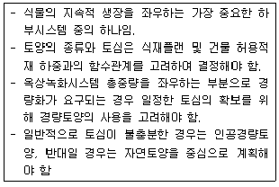
- 배수층
- 토양여과층
- 육성토양층
- 식생층
(정답률: 71%)
52. 녹화식물 재료로서 덩굴식물이 압도적으로 많이 이용되고, 녹화의 효과도 뛰어난 공간은?
- 옥상녹화
- 벽면녹화
- 사면녹화
- 생울타리
(정답률: 73%)
53. 생물다양성의 종류로 분류되기 어려운 것은?
- 천이의 다양성
- 서식처의 다양성
- 유전자의 다양성
- 생몰종의 다양성
(정답률: 61%)
54. 토양수분의 유형 중 식물이 이용 가능한 유효수분은?
- 화합수
- 흡습수
- 모관수
- 중력수
(정답률: 69%)
55. 토양 내 수분포텐셜에 대한 설명으로 틀린 것은?
- 수분포텐셜은 물이 가지는 단위용적당 에너지를 나타내는 것으로서, 단위는 J/m3로 나타낸다.
- 토양수분의 수분포텐셜보다 식물체 내(뿌리부분)의 수분포텐셜이 낮으면 토양수분이 식물뿌리에 흡수 되기 어렵다.
- 식물의 뿌리부분보다 잎의 수분포텐셜이 낮으면 수분은 뿌리부위에서 잎으로 이동하게 된다.
- 대기의 수분포텐셜이 잎의 수분포텐셜보다 낮으면 잎에서 대기중으로 수분이 이동하게 된다.
(정답률: 61%)
56. 식물과 침식과의 관계에 대한 설명으로 틀린 것은?
- 초본류의 뿌리는 토양표층에 고밀도로 분포하여 지표면에서의 빗물의 흐름에 의한 토양입자의 이탈이나 유실을 방지한다.
- 목본유의 뿌리는 대손지에 깊게 침투하고, 근계를 형성하여 비탈면의 안정에 효과적이다.
- 비탈면에서 초본류의 피복률과 침식량은 정비례한다.
- 초본류의 잎이나 줄기는 빗물의 충격력을 감소시켜 빗물에 의한 침식작용을 감소시킨다.
(정답률: 66%)
57. 식생기반재(토양) 분석의 기초이론 중 물리성을 평가하는 항목이 아닌 것은?
- 염기치환용량
- 토성
- 토양의 밀도
- 토양온도
(정답률: 57%)
58. 생태적인 도시계획을 위하여 취하는 조치들에 대한 설명으로 잘못된 것은?
- 토지이용에 대한 밀도를 단순화하여 많은 생물들이 공업화된 속에서 살아 갈 수 있도록 한다.
- 오픈스페이스를 연결하여 생물개체군의 고립화를 최소화 한다.
- 건축물들을 기능적으로 연결하여 건축물들이 생태계의 교란요소가 되지 않게 한다.
- 동일한 토지 이용이 지속적으로 되어온 공간은 우선적으로 보호하여 성숙된 생태계의 유지에 힘쓴다.
(정답률: 69%)
59. 하부연안대에서 육지에서 호수쪽을 향하여 분포하고 있는 수생식물의 순서로 적합한 것은?
- 부엽식물 침수식물 → 부수식물 → 추수(정수) 식물
- 부엽식물 → 침수식물 → 추수(정수)식물 → 부수식물
- 추수(정수)식물 → 침수식물 → 부엽식물ᅳ → 부수식물
- 추수(정수)식물 → 부엽식물 → 침수식물 → 부수식물
(정답률: 58%)
60. 하천생태계의 복원에 있어서 다음이 설명하는 지역은?
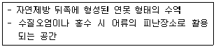
- 소
- 여울
- 하상
- 배후습지
(정답률: 54%)
4과목: 경관생태학
61. 자연지역 구분에서 고려되어야 할 주요인자가 아닌 것은?
- 토양
- 지형
- 식생
- 물질순환
(정답률: 66%)
62. 생태적 역동성 측면에서 자연보전지구 설정 시 고려해야 할 사항으로 가장 적당한 것은?
- 동질의 경관
- 멸종위기의 개체군
- 가능한 다양한 종류의 패치
- 개체군 유지를 위한 최소한의 패치 크기
(정답률: 40%)
63. 경관조각의 형태적 특성과 관계가 없는 것은?
- 굴곡
- 내부
- 둘레/면적의 비
- 야생동물의 종수
(정답률: 71%)
64. 도시생태계를 보호하고 복원하기 위해서는 현존하는 녹지를 보전하고 인공화 된 녹지에 자연을 복원하기 위한 다양한 노력이 필요하다. 다음 중 생태적인 도시계획 및 개발을 위한 지침으로 보기 어려운 것은?
- 자연보호구역의 설정
- 서식지의 다양성 유지
- 절대적 가치의 보전종 도입
- 자연과 경관에 대한 최소한의 침해
(정답률: 67%)
65. 종 또는 개체군의 복원에 대한 [보기]의 설명에서 각각의 ( )에 들어갈 용어를 순서대로 나열한 것은?
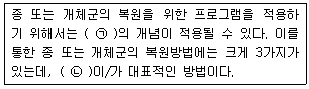
- ㉠ SLOSS, ㉡ 방사(Reintroduction)
- ㉠ 비오톱(Biotope), ㉡ 포획번식(Captive Breeding)
- ㉠ 포획번식(Captive Breeding), ㉡ 방사(Reintroduction)
- ㉠ 메타개체군, ㉡ 이주(Translocation)
(정답률: 59%)
66. 다음 설명의 ( )에 해당하는 생태학적 용어가 순서대로 나열된 것은?
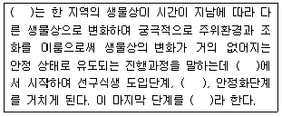
- 생태변이, 경쟁단계, 환경천이, 생태안정화
- 생태천이, 무식생상태, 경쟁단계, 극상상태
- 생태변이, 1차 천이, 경쟁단계, 2차 천이
- 생태천이, 경쟁단계, 극상상태, 생태안정화
(정답률: 73%)
67. 경관생태학의 주요한 3대 연구 주제가 아닌 것은?
- 구조
- 속성
- 기능
- 변화
(정답률: 50%)
68. 해안사구에 대한 설명으로 옳은 것은?
- 우리나라의 대표적인 해안사구는 신두리 사구로서 해안 국립공원으로 지정되었다 .
- 해안 사구는 사빈의 모래가 파랑과 바람의 작용에 의해 낮은 구름 모양으로 쌓여서 형성된 지형이다.
- 해안에 위치하기 때문에 식생이나 동물상은 특별히 중요하지 않고 경관요소나 해수욕장 등으로의 가치가 뛰어나다.
- 해안사구는 대부분 경관이 양호한 구간에 많이 형성되어 있으므로 충분히 개발하여 관광 및 위락시설을 조성하는 것이 바람직하다.
(정답률: 61%)
69. 훼손된 자연의 복원단계 중 복구(rehabilitation)에 대한 설명으로 옳은 것은?
- 자연의 회복 능력에 전적으로 맡기는 것
- 훼손된 자연을 회복의 중간단계까지만 회복시키는 것
- 훼손된 자연의 구조와 기능을 교란되기 전의 상태로 회복시키는 것
- 훼손된 자연에 인위적으로 선발된 생물종이나 에너지, 물, 비료 등을 보충하는 것
(정답률: 46%)
70. 도시경관생태의 보전과 관리를 위한 생태적인 도시계획을 위한 적절한 지침이 아닌 것은?
- 도심에 적응하는 생물상율 고려한다.
- 토지 이용에 대한 밀도를 다양하게 한다.
- 생물다양성율 높이기 위해 특정 외래수종을 도입한다.
- 도시 내의 큰 숲은 가능하면 보전하여 보호구역을 만든다.
(정답률: 78%)
71. 우리나라 산촌의 경관생태에 대한 설명으로 가장 거리가 먼 것은?
- 지질ㆍ지형적 특성과 파랑에 의해 형성된 기암괴석의 절경과 자연암반에 발달한 기묘한 식생과 함께 독특한 지형이 창출한 경관이다.
- 최근 많은 지역의 산촌은 골프장, 도로 및 석산개발, 스키장 건설, 송전탑 둥 인간의 다양한 경제적 욕구에 따른 광범위한 개발행위로 그 경관구조가 변하고 있다.
- 화전경작은 전통적인 산지이용의 방법으로써 독특한인문ㆍ사회적 특성을 가지고 있으며, 우리나라 산촌경관구조의 변화와 밀접한 관계를 맺고 있다.
- 인간과 자연이 연결된 생태계로서 그 존재 양식은 지형, 기후, 수문, 토양 등 물리적 환경요인 뿐만 아니라 인문ㆍ사회적 환경에 의해 큰 영향을 받아왔다.
(정답률: 46%)
72. 아파트와 같은 대규모 택지개발 예정지역이 산림 인접지역으로 결정되었다. 환경영향평가 조사결과 산림 가장자리에 다양한 야생동식물이 서식하는 것으로 나타났다. 환경친화적인 계획수립을 위해 ,가장 적합한 저감 방안은?
- 주변의 다른 산림으로 야생동식물을 이전시켜 종의 감소를 줄이도록 한다.
- 택지개발지역과 신림지역에 장벽을 설치하여 야생동물의 이동을 차단하도록 한다.
- 택지조성 시 택지개발지역 중심부에 인공습지를 조성 하여 사람과 야생동물의 만족도를 모두 높이도록 한다.
- 산림경계와 택지조성지역 사이에 일정 간격을 두어 계곡부에 연못을 설치하는 등 야생동물의 서식처를 제공하도록 한다.
(정답률: 65%)
73. 경관생태(Landscape Ecology)란 용어를 처음 사용한 사람은?
- R.T.T Forman
- W. Haber
- Z. Naveh
- C. Troll
(정답률: 70%)
74. 10m 이상의 선상에서 노루풀의 빈도를 조사한 결과 10cm 지점, 50cm 지점, 115cm 지점에서 출현하였다. 식물상 평가 중 접선법에 의하면 노루풀의 피도율은?
- 3%
- 10.5%
- 11.5%
- 17.5%
(정답률: 35%)
75. 도시 비오톱 지도화의 방법으로 볼 수 없는 것은?
- 선택적 지도화 방법
- 포괄적 지도화 방법
- 객관적 지도화 방법
- 대표적 지도화 방법
(정답률: 59%)
76. 경관의 구조에 대한 설명으로 옳지 않은 것은?
- 경관을 이루는 기본단위인 경관요소는 패치, 매트릭스，코리더로 이루어져 있다.
- 보전의 중요성이 높은 종을 위해서 원형보다 굴곡이 많은 패치가 좋다.
- 매트릭스는 경관구조에서 패치와 코리더를 둘러싸고 있는 배경이 되는 경관요소를 말한다.
- 코리더는 서식처 기능, 이동통로 기능, 여과 기능, 종의 공급 및 수요처의 기능을 가지고 있다.
(정답률: 58%)
77. 높은 경관다양성 (Landscape diversity)에 의해 긍정적인 영향을 받지 않은 요인은?
- 내부 종
- 전문먹이 종
- 가장자리 종
- 높은 종 풍부도
(정답률: 27%)
78. 메타개체군 이론에는 결여 되어 있으나 경관생태학에서만 찾아 볼 수 있는 특징이 아닌 것은?
- 생물의 이동
- 가장자리 효과
- 패치의 질적인 변이
- 주변 환경의 질적인 변이
(정답률: 55%)
79. 현대 사회에서 인간위주의 개발행위는 야생 동ㆍ식물의 서식처를 파괴하였다. 다음 중 최근 10년간 국내에서 큰 폭으로 감소한 야생 동ㆍ식물 서식처가 아닌 것은?
- 산림
- 나지
- 갯벌
- 농경지
(정답률: 50%)
80. 도시생태계의 생물은 자연생태계에서의 그것과 큰 차이를 나타낸다. 이는 도시 환경이 자연 환경과 큰 차이를 갖기 때문인데, 이러한 도시에서 생활하는 생물 군집으로 보기 힘든 것은?
- 공원과 정원의 조림 식생
- 도시화 이전에 존재했던 생물 군집의 일부
- 자연형 하천 주위에 형성된 저습지에 서식하는 보호종 군집
- 환경인자의 조합과 톡별한 도시유입의 결과로서 도시에만 나타나는 생물군집
(정답률: 53%)
5과목: 자연환경관계법규
81. 습지보전법상 "연안습지"의 용어의 정의로 옳은 것은?
- 습지수면으로부터 수심 10m까지의 지역을 말한다.
- 광합성이 가능한 수심(조류의 번식에 한한다.)까지의 지역을 말한다.
- 만조때 수위선과 지면의 경계선으로부터 간조때 수위선과 지면의 경재선까지의 지역을 말한다.
- 지하수위가 높고 다습한 곳으로서 간조시에 수위선과 지면이 접하는 경계면 내에서 광합성이 가능한 수심 지역까지를 말한다.
(정답률: 71%)
82. 자연공원법규상 공원관리청이 규정에 의해 징수하는 점용료 또는 사용료 요율기준 중 “토지의 개간”의 기준요율은?
- 수확예상액의 100분의 5 이상
- 수확예상액의 100분의 15 이상
- 수확예상액의 100분의 25 이상
- 수확예상액의 100분의 50 이상
(정답률: 59%)
83. 환경정책기본법령상 수집 및 수생태계 기준 중 하천의 사람의 건강보호기준으로 옳지 않은 것은?(단, 단위는 mg/L 이다.)
- 납(Pb) : 0.02 이하
- 사염화탄소 : 0.004 이하
- 음이온계면활성제(ABS) : 0.5 이하
- 테트라클로로에틸렌(PCE) : 0.04 이하
(정답률: 49%)
84. 독도 등 도서지역의 생태계보전에 관한 특별법 시행규칙상 환경부장관이 특정도서를 지정하거나 해제ㆍ변경한 경우에 이를 관보에 고시하여야 하는 기간(기준)은?
- 지정일 또는 해제ㆍ변경일 부터 15일 이내
- 지정일 또는 해제ㆍ변경일 부터 30일 이내
- 지정일 또는 해제ㆍ변경일 부터 60일 이내
- 지정일 또는 해제ㆍ변경일 부터 90일 이내
(정답률: 63%)
85. 습지보전법상 습지보전을 위한 사항 중 옳지 않은 것은?
- 습지보전기초계획 및 기본계획의 수립에 관하여 필요한 사항은 대통령령으로 정한다.
- 해양수산부장관은 연안습지와 관련된 습지보호지역 등의 지정 및 보전에 관한 시책을 수립ㆍ시행한다.
- 환경부장관ㆍ해양수산부장관 또는 시ㆍ도지사는 5년마다 습지의 생태계현황 및 오염현황과 습지주변 영향지역의 토지이용실태 등 습지의 사회ㆍ경제적 현황에 관한 기초조사를 실시하여야 한다.
- 습지보전에 관한 사항을 심의하기 위하여 환경부장관 소속하에 국가습지심의 위원회를 두며, 위원장은 환경부장관이 되고, 위원회는 위원장 1인과 부위원장 1인을 포함한 20인 이내의 위원으로 구성한다.
(정답률: 62%)
86. 야생생물보호 및 관리에 관한 법률상 생물자원 보전시설을 등록한 자가 시설 및 요건을 갖추지 못하여 등록이 취소된 경우, 취소된 날부터 며칠 이내에 그 등록증을 환경부장관 둥에게 반납 하여야 하는가?
- 3일 이내에
- 5일 이내에
- 7일 이내에
- 15일 이내에
(정답률: 64%)
87. 환경정책기본법령상 이산화질소(NO2)의 1시간 평균치 대기환경기준은?
- 0.⑤ppm 이하
- 0.06ppm 이하
- 0.10ppm 이하
- 0.15ppm 이하
(정답률: 44%)
88. 자연환경 보전법규상 생태통로의 설치기준으로 옳지 않은 것은?
- 생태통로의 길이가 길수록 폭을 좁게 설치하여 생태통로를 이용하는 동물들이 순식간에 빠른 속력으로 이동하는 것을 방지한다.
- 생태통로를 이용하는 동물들이 통로에 접근할 때 불안감을 느끼지 아니하도록 생태통로 입구와 출구에는 원칙적으로 현지에 자생하는 종을 식수하며, 토양 역시 가능한 한 공사 중 발생한 절토를 사용한다.
- 동물이 많이 횡단하는 지점에 동물들이 많이 출현 하는 곳임을 알려 속도를 줄이거나 주의하도록 그 지역의 대표적인 동물 모습이 담겨 있는 동물출현표 지판을 설치한다.
- 생태통로 중 수계에 설치된 박스형 암거는 물을 싫어하는 동물도 이동할 수 있도록 양쪽에 선반형 또는 계단형의 구조물을 설치하며, 작은 배수로나 도랑을 설치한다.
(정답률: 75%)
89. 자연환경보전법상 이 법에서 정의로 옳지 않은 것은?
- "자연생태"라 함은 자연환경적 측면에서 시각적ㆍ심미적인 가치를 가지는 지역ㆍ지형 및 이에 부속된 자연요소 또는 사물이 복합적으로 어우러진 자연의 경치를 말한다.
- "생물다양성"이라 함은 육상생태계 및 수생생태계(해양생태계를 제외한다)와 이들의 복합 생태계를 포함하는 모든 원천에서 발생한 생 물체의 다양성을 말하며, 종내ㆍ종간 및 생태계의 다양성을 포함한다.
- "생태축"이라 함은 생물다양성을 증진시키고 생태계 기능의 연속성을 위하여 생태적으로 중요한 지역 또는 생태적 기능의 유지가 필요한 지역을 연결하는 생태적 서식공간을 말한다.
- "대체자연"이라 함은 기존의 자연환경과 유사한 기능을 수행하거나 보완적 기능을 수행하도록 하기 위하여 조성하는 것을 말한다.
(정답률: 60%)
90. 국토기본법상 국토종합계획은 몇 년을 단위로 하여 수립하는가?
- 1년
- 5년
- 10년
- 20년
(정답률: 72%)
91. 야생생물보호 및 관리에 관한 법률 시행규칙상 멸종위기야생생물 I급에 해당하지 않는 것은?
- 표범
- 따오기
- 흰꼬리수리
- 죽백란
(정답률: 63%)
92. 야생생물보호 및 관리에 관한 법률 시행령상 생물자원의 분류ㆍ보전 등에 관한 관련 전문가에 해당하는 사람으로 거리가 먼 것은?
- 「국가기술자격법」에 의한 생물분류기사
- 「국가기술자격법」 에 의한 자연환경기사
- 생물자원 관련 분야의 석사학위 이상 소지자로서 해당 분야에서 1년 이상 종사한 사람
- 생물자원 관련 분야의 학사학위 이상 소지자로서 해당 분야에서 3년 이상 종사한 사람
(정답률: 80%)
93. 환경정책기본법상 규정된 용어의 정의로 옳지 않은 것은?
- "환경오염"이 란 사업 활동 및 그 밖의 사람의 활동에 의하여 발생하는 대기오염, 수질오염, 토양오염, 해양오염, 방사능오염, 소음ㆍ진동, 악취, 일조방해, 인공조명에 의한 빛 공해 등으로써 사람의 건강이나 환경에 피해를 주는 상태를 말한다.
- "환경훼손''이란 야생 동ㆍ식물의 남획 및 그 서식지의 파괴, 생태계질서의 교란, 자연경관의 훼손, 표토의 유실 등으로 인하여 자연환경의 본래적 기능에 중대한 손상을 주는 상태를 말한다.
- "환경용량"이란 일정한 지역 안에서 환경의 질을 유지하고 환경오염 또는 환경훼손에 대하여 인간이 수용ㆍ정화 및 복원할 수 있는 한계를 말한다.
- "환경보전"이란 환경오염 및 환경훼손으로부터 환경을 보호하고 오염되거나 훼손된 환경을 개선함과 동시에 쾌적한 환경의 상태를 유지ㆍ조성하기 위한 행위를 말한다.
(정답률: 71%)
94. 다음은 국토의 계획 및 이용에 관한 법률에 따른 벌칙기준이다. ( ) 안에 알맞은 것은?
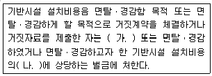
- ①. 1년 이하의 징역, ②. 3배 이하
- ①. 1년 이하의 징역, ②. 10배 이하
- ①. 3년 이하의 징역, ②. 3배 이하
- ①. 3년 이하의 징역, ②. 10배 이하
(정답률: 60%)
95. 산지관리법상 산지전용ㆍ일시사용제한지역으로 지정할 수 있는 산지로 가장 거리가 먼 것은?
- 대통령령으로 정하는 주요 산줄기의 능선부로서 자연경관 및 산림생태계의 보전을 위하여 필요하다고 인정되는 산지
- 송이버섯과 같은 중요한 임산물 생산을 위해 보전이 필요한 산지로서 산림청장이 정하는 산지
- 산사태 등 재해발생이 특히 우려되는 산지로서 대통령령으로 정하는 산지
- 명승지, 유적지, 그 밖에 역사적ㆍ문화적으로 보전할 가치가 있다고 인정되는 산지로서 대통령령으로 정하는 산지
(정답률: 60%)
96. 개발제한구역의 지정 및 관리에 관한 특별조치 법규상 개발제한구역의 경계선을 표시하기 위한 경계표석의 규격 및 설치기준으로 틀린 것은?
- 표석재료는 강화플라스틱(FRP)， 표석의 색은 녹색으로 한다.
- 개발제한구역 글씨는 음각 후 압출마감(흑색) 하고, 번호(백색)는 도색마감으로 부착한다.
- 강화플라스틱과 콘크리트로 된 기초가 일체가 되도록 설치한다.
- 글자체 : 고딕체, 글자색 : 녹색(Pantone 370C), 흰색(White 100%), 검은색(Black 100%)으로 한다.
(정답률: 56%)
97. 농지법령상 이농당시의 소유농지를 계속하여 소유할 수 있는 자의 농업경영기간으로 “대통령령으로 정하는 기간”에 해당하는 기준은?
- 2년
- 3년
- 5년
- 8년
(정답률: 46%)
98. 산지관리법상 공익용산지가 아닌 것은?
- 수도법에 따른 상수원보호구역의 산지
- 자연환경보전법에 따른 생태경관보전지역의 산지
- 산림자원의 조성 및 관리에 따른 법률에 따른 시험림의 산지
- 습지보전법에 따른 습지보호지역의 산지
(정답률: 65%)
99. 습지보전법령상 습지주변관리지역에서 규정에 의한 습지보호에 위해를 줄 수 있는 행위를 하고자 하는 자가 환경부장관 둥에게 승인 또는 협의를 얻어야 하는 대상 행위로 거리가 먼 것은?
- 공유수면 관리 및 매립에 관한 법률 규정에 의한 매립
- 공유수면 관리 및 매립에 관한 법률 규정에 의한 점용ㆍ사용허가 대상 행위
- 농지법 규정에 의한 농지의 전용 허가 대상 행위
- 해양수산자원관리법에 의한 시설설치 허가 대상 행위
(정답률: 43%)
100. 다음은 백두대간 보호에 관한 법률상 백두대간 보호지역의 지정과 관련한 지역에 관한 설명에 서 ( )에 알맞은 것은?
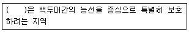
- 특별구역
- 완충구역
- 핵심구역
- 생태구역
(정답률: 76%)